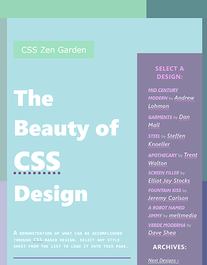
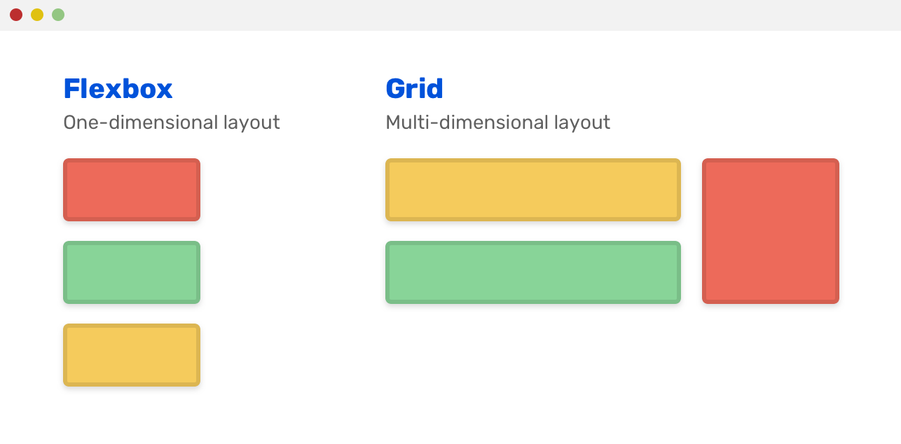

This project is a website I worked on with a partner, meant for a fictional bug repellent brand known as csszengarden. The purpose of this project was to develop our skills in researching and creating a product for consumers based on the criteria that they provide. The majority of this site was coded using GitHub Copilot, with the main focus being on web design.


CSS Flexbox: I deepened my understanding of utilizing CSS flexbox to desired content structures.
I enhanced my knowledge of using CSS grid to move content to specific areas on a page.
I struggled with creating asymmetrical designs using CSS grid.
After considering my options, I decided to implement negative margins to create the asymmetry I needed.
I had to use every CSS selector provided to me on a Google Sheet by my teacher.
I started using CSS selectors to modify the fonts and text styles of various elements in creative ways that I normally wouldn’t.
I struggled with replicating the layout of the text arrangement I was using for inspiration using CSS grid.
I decided to use a combination of CSS flexbox and CSS grid in order to achieve the structure I was attempting to replicate.
Persistence: When I was struggling with trying to recreate the unorthodox layouts of the Zen Garden project, which I took inspiration from, rather than just simplifying the design, I did my best to build upon my CSS grid and flexbox knowledge by searching up documentation and utilizing Chrome’s Developer Tools to analyze the website styles and apply them to mine.
Thinking Flexibly: When I was creating the CSS for this project, I didn’t constrain myself to using only CSS flexbox or only CSS grid for individual parts of the website. I made sure to think very flexibly, imagining how I would be able to use either of these systems for any element on the page and which would be better to use.